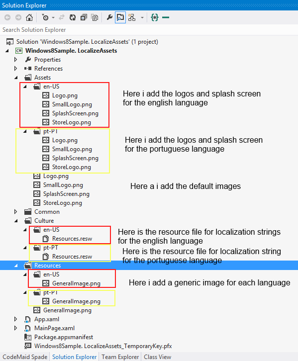
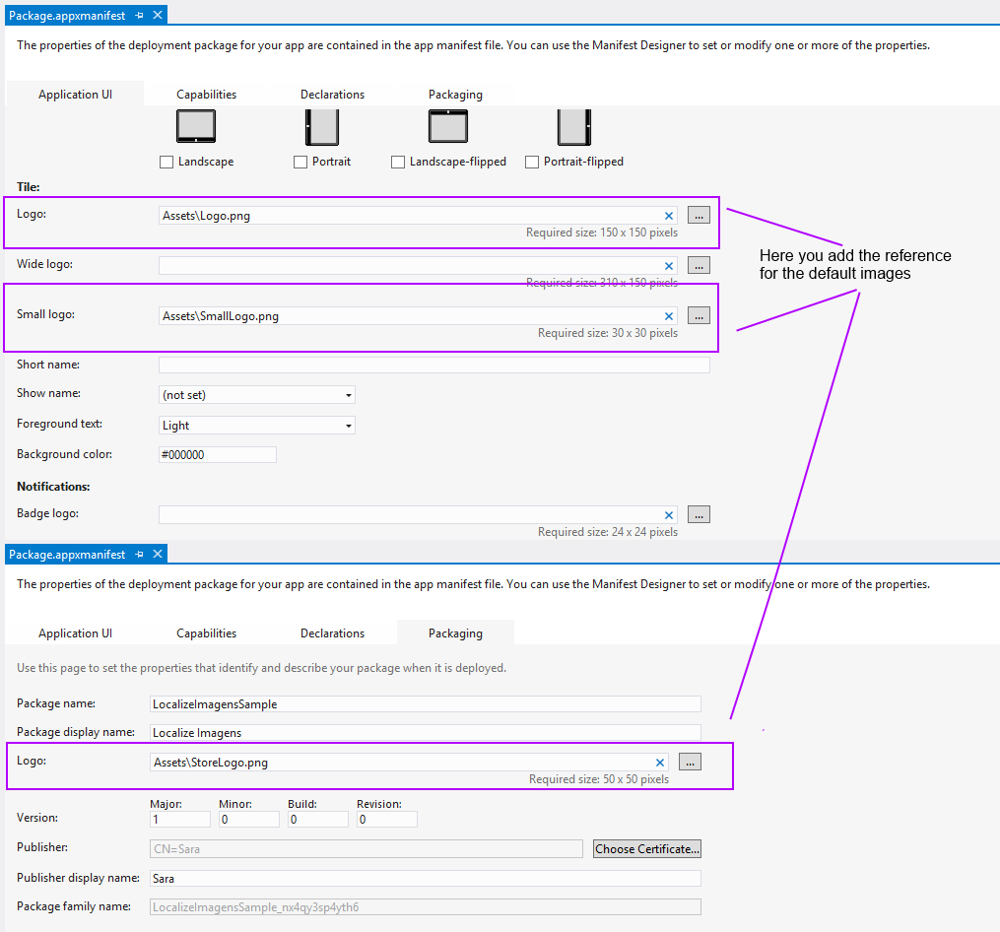

This sample shows who to localization images.
Some applications need to add images for each language that application supports. In this sample you can see how to localize images from Assets folder (where is defined all logos and splash screen image) and other images that are in other folder, for example Resources folder (but can be other name).
The sample covers XAML code, C# code and appManifest file.
You only need Visual Studio 2012 and Windows 8, both the RTM version.
Description
In the first step we need to add the images in each folder like we see in the following picture:

And we need to add the resource file (*.resw) for each language you want the application supports.
You can see the topic: Creating resource files in Creating and retrieving resources in Windows Store apps
The second step is to define in manifest the logos path:

In the MainPage.xaml ans MainPage.xaml.cs you can see how to add the images:
// Case 1
// Here is added the default image
// but is showed the right image
// (in this sample, shows the english image or portugueses image)
<Image Source="Assets/Logo.png"/>
// Case 2
// the SourceForImageLogo is to represent the
// SourceForImageLogo.Source value in *.resw file
// in english case is: Assets/en-US/Logo.png
//this case is not necessary because the last case is better
<Image x:Uid="SourceForImageLogo" />
// Case 3
// in code behind you can add the image doing the //following
var imageUriForlogo = new Uri("ms-appx:///Assets/Logo.png");
logoImage.Source = new BitmapImage(imageUriForlogo);
// Case 1 // Here is added the default image // but is showed the right image // (in this sample, shows the english image or portugueses image) <Image Source="Assets/Logo.png"/> // Case 2 // the SourceForImageLogo is to represent the // SourceForImageLogo.Source value in *.resw file // in english case is: Assets/en-US/Logo.png //this case is not necessary because the last case is better <Image x:Uid="SourceForImageLogo" /> // Case 3 // in code behind you can add the image doing the //following var imageUriForlogo = new Uri("ms-appx:///Assets/Logo.png"); logoImage.Source = new BitmapImage(imageUriForlogo);
Related Sample
Application resources and localization sample
Related Topics
Creating and retrieving resources in Windows Store apps
Using the Manifest Designer (Windows Store apps)
To debug the app and then run it, press F5 or use Debug > Start Debugging. To run the app without debugging, press Ctrl+F5 or use Debug > Start Without Debugging.